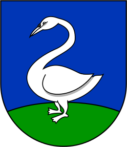

Heist-op-den-Berg
Ik woon ondertussen iets meer dan één jaar in Heist-op-den-Berg. Ik weet na dit jaar dat ik in de buurt woon van een schaatsbaan, een Colruyt, een Lidl en een Aldi. Voor de rest kom ik niet zo heel veel buiten. Dus ik ben ook nog niet echt iets gaan bezichtigen hier. Op zondag en maandag is het (als er minder corona problemen zouden zijn) markt wat wel eens gezellig kan zijn om over te wandelen. In Heist kan je ook een Murga vinden: Murga Agrum. De definitie volgens hun site: "Een murga is een hedendaagse straatfanfare die werkt rond muziek, dans, woord en kostuum en verbonden is met een straat, buurt of omgeving. Elke murga is anders. Een murga geeft de identiteit van de groep weer en maakt gebruik van de individuele talenten van de deelnemers. Binnen een murga kan en mag alles. Alle stijlen zijn toegelaten en letterlijk iedereen kan meedoen. ". Ik ben enkele jaren met murgra Agrum mee geweest als circusartiest als randanimatie. Fakkels bij een avondoptreden verlichten de boel en de macarena dansen op een eenwieler is altijd speciaal (maar wel vermoeiend). Dit is wel al een aantal jaar geleden dus foto's uit dat tijdperk lijken niet per sé nog hard op mij.
